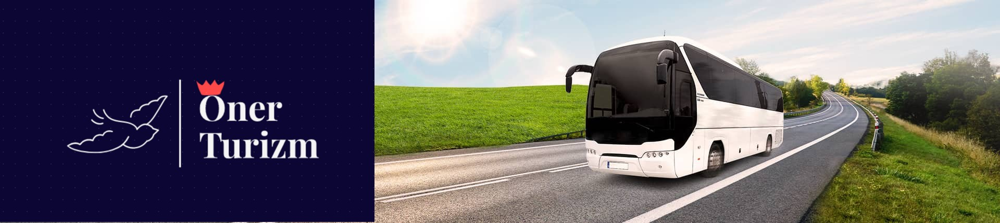
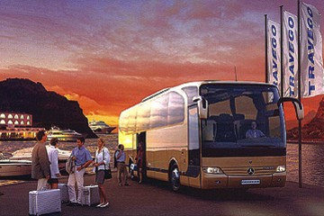

Öner Turizm ||
Konforlu Ve Güvenli Ulasımın Adresi...

Yolcu Sorumlulukları

SORUMLULUK
Taşıyıcının ihmali sonucu meydana gelmedikçe kayıtsız bagaja ilişkin zarardan busestaşıyıcı sorumlu değildir. Eğer yolcunun müterafik kusuru (ortak ve birbirine karışmış kusur) varsa taşıyıcının sorumluluğu müterafik kusura ilişkin uygulanabilir mevzuat hükümlerine tabidir.
YOLCU SORUMLULUKLARI
Yolcu taşımaları biletsiz yapılamaz. 6 yaş ve üzeri tüm çocukların ayrı koltukta seyahat etmesi ve bilet düzenlenmesi zorunludur. Yolcular seyahat süresince biletlerini yanlarında bulundurmak zorundadır. Biletinizi alınız, doğruluğunu kontrol ediniz ve yanınızda bulundurunuz.
Yolcu beraberinde olmayan ticari eşya ve kargo taşınamaz. Taşıtın bagaj taşınmasına mahsus bölümler dışında eşya taşınamaz. Özel kafeslerindeki kedi, köpek ve kuş gibi evcil hayvanlar sadece bagaj taşımaya mahsus bölümlerde taşınabilir. Tehlike yaratabilecek yanıcı, yakıcı, parlayıcı, patlayıcı, zehirli, bulaşıcı, radyoaktif ve benzeri nitelikte eşya, kargo ve bagajlar, bagaj bölümü de dahil olmak üzere otobüsle taşınamaz.
Yolcular taşımacının güvenlik yönünden almış olduğu tedbirlere uymak zorundadırlar. Yolcular trafiğin seyir ve güvenliğini tehlikeye düşürecek, diğer yolcuları rahatsız edecek, genel ahlaka ve adaba aykırı tutum ve davranışlarda bulunamaz. Taşıtın teknik donanımını olumsuz etkileyecek hiçbir elektronik cihazı kullanamaz.
Terminal ve ara duraklar ile trafiğin izin verdiği yerler dışında yolcu indirilip bindirilemez. Kurallara aykırı indirme ve bindirme talebinde bulunmayınız.